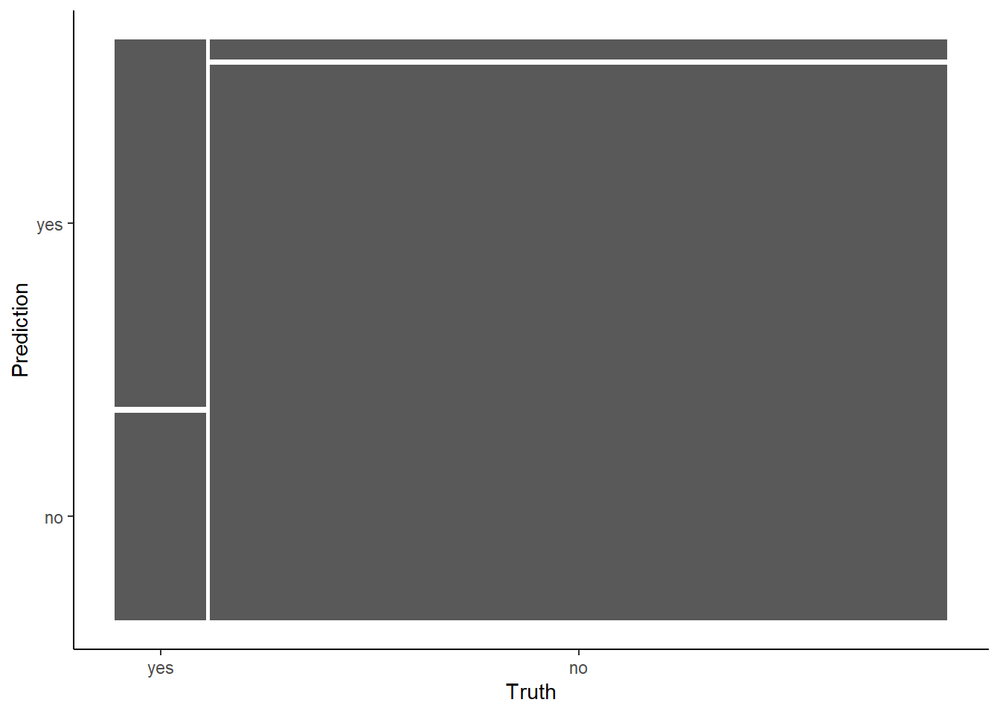
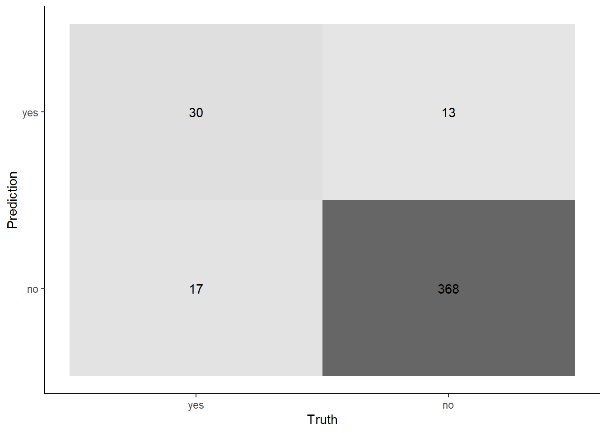
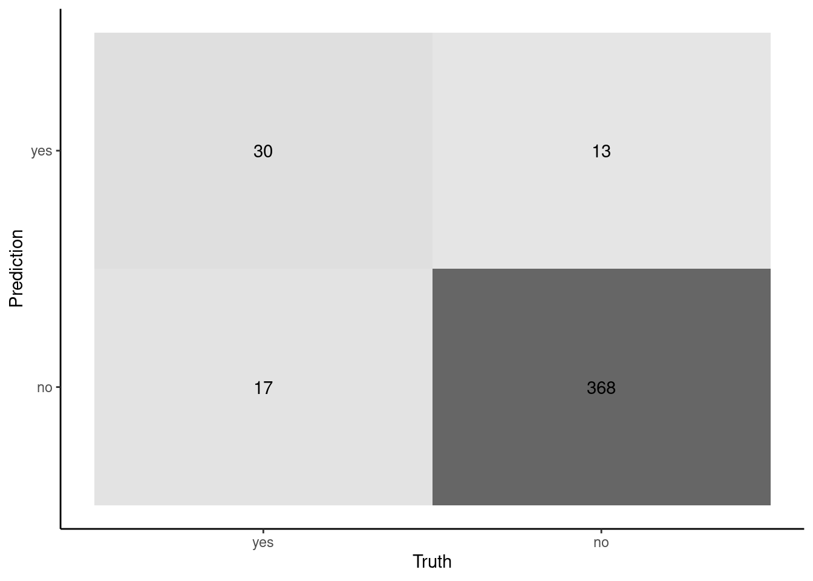

Post questions to application-assignments Slack channel
Submit the application assignment here and complete the unit quiz by 8 pm on Wednesday, March 13th
8.2 Introduction
In this unit, we will again use the Cleveland heart disease dataset.
However, I have modified this to make the outcome unbalanced such that Yes represents approximately 10% of the observations
Now that we will calculate performance metrics beyond accuracy, the order of the levels of our outcome variable(disease) matters. We will make sure that the positive class (event of interest; in this case yes for disease) is the first level.
These are not trivial advantages in research or application
However, accuracy has at least three problems in some situations
If the outcome is unbalanced, it can be misleading
High performance from simply predicting the majority (vs. minority) class for all observations
Need to anchor evaluation of accuracy to baseline performance based on the majority case percentage
If the outcome is unbalanced, selecting among model configurations with accuracy can be biased toward configurations that predict the majority class because that will yield high accuracy by itself even without any signal from the predictors
Regardless of outcome distribution, it considers false positives (FP) and false negatives (FN) equivalent in their costs
This is often not the case
Outcome distributions :
May start to be considered unbalanced at ratios of 1:5 (20% of cases in the infrequent class)
In many real life applications (e.g., fraud detection), imbalance ratios ranging from 1:1000 up to 1:5000 are not atypical
When working with unbalanced datasets:
The class or classes with many observations are called the major or majority class(es)
The class with few observations (and there is typically just one) is called the minor or minority class.
In our example, the majority class is negative (no) for heart disease and the minority class is positive (yes) for heart disease
Question: In our example, our model’s accuracy in test seemed high but was it really performing as well as this seems?
Show Answer
Although this test accuracy seems high, this is somewhat misleading. A model that simply labeled everyone as negative for heart disease would achieve almost as high accuracy in our test data
# A tibble: 2 × 3
disease n prop
<fct> <int> <dbl>
1 yes 47 0.110
2 no 381 0.890
Question: Perhaps more importantly, are the costs of false positives (screening someone as positive when they do not have heart disease) and false negatives (screening someone as negative when they do have heart disease) comparable for a preliminary screening method?
Show Answer
Probably not. A false positive might mean that we do more testing that is unnecessary and later find out they do not have heart disease. This comes with some monetary cost and also likely some distress for the patient. However, a false negative means we send the patient home thinking they are healthy and may suffer a heart attack or other bad outcome. That seems worse if this is only a preliminary screen.
8.3 The Confusion Matrix and Related Performance Metrics
At a minimum, it seems important to consider these issues explicitly but accuracy is not sufficiently informative.
The first step to this more careful assessment is to construct a confusion matrix
Ground Truth
Prediction
Positive
Negative
Positive
TP
FP
Negative
FN
TN
Definitions:
TP: True positive
TN: True negative
FP: False positive (Type 1 error/false alarm)
FN: False negative (Type 2 error/miss)
Perfect classifier has all the observations on the diagonal from top left to bottom right
The two types of errors (on the other diagonal) may have different costs
We can now begin to consider these costs
Lets look at the confusion matrix associated with our model’s performance in test
We will use conf_mat() to calculate the confusion matrix
There does NOT (yet?) seem to be a vector version (i.e., conf_mat_vec())
Therefore, we have to build a tibble of truth and estimate to pass into conf_mat()
It is best to assign the result to an object (e.g., cm) because we will use it for a few different tasks
cm <-tibble(truth = feat_test$disease,estimate =predict(fit_glmnet, feat_test)$.pred_class) |>conf_mat(truth, estimate)
Let’s display the matrix
The columns are sorted based on the true value for the observation (i.e., ground truth)
In this case, that is the patients’ true disease status
We can see it is unbalanced with most of the cases in the “no” column
The rows are sorted by our model’s predictions
As we noted above, correct predictions fall on the top/left- bottom/right diagonal
cm
Truth
Prediction yes no
yes 30 13
no 17 368
Tidy model’s makes it easy to visualize this matrix in one of two types of plots
mosaic (the default)
autoplot(cm)

heatmap
autoplot(cm, type ="heatmap")

Regardless of the plot, you can now begin to see the issues with our model
It seems accurate for patients that do NOT have heart disease
368/381 correct
It is not very accurate for patients that DO have heart disease
30/47 correct
This differential performance was masked by our global accuracy measure because overall accuracy was weighted heavily toward accuracy for patients without heart disease given their much higher numbers
We can use this confusion matrix as the starting point for MANY other common metrics and methods for evaluating the performance of a classification model. In many instances, the metrics come in pairs that are relevant for FP and FN errors
Sensitivity & Specificity
Positive and Negative Predictive Value (PPV, NPV)
Precision and Recall
There are also some single metric approaches (like accuracy) that may be preferred when the outcome is unbalanced
Balanced accuracy
F1 (and other F-scores)
Kappa
There are also graphical approaches are based on either sensitivity/specificity or precision/recall. These are:
The Receiver Operating Characteristic (ROC) curve
The Precision/Recall Curve (not covered further in this unit)
Each of these curves also yields a single metric that represents the area under the curve
The best metric/method is a function both of your intended use and the class distributions
As noted, accuracy is widely understood but can be misleading when class distributions are highly unbalanced
Sensitivity/Specificity are common in literatures that consider diagnosis (clinical psychology/psychiatry, medicine)
Positive/Negative predictive value are key to consider with sensitivity/specificity when classes are unbalanced
ROC curve and its auROC metric provide nice summary visualization and metric when considering classification thresholds other than 50% (also common when classes are unbalanced or types of errors matter)
Here are definitions of many of the most common metrics linked to the confusion matrix
\(F_\beta\) was derived so that it measures the effectiveness of a classifier for someone who assigns \(\beta\) times as much importance to recall as precision
It is easy to get any of these performance metrics using summary() on the confusion matrix
Many of the statistics generated are based on an understanding of which level is the positive level.
Tidymodels (yardstick to be precise) will default to consider the first level the positive level.
If this is not true, some statistics (e.g., sensitivity, specificity) will be incorrect (i.e., swapped).
You can override this default by setting the following parameter inside any function that is affected by the order of the classes” event_level = "second"
Let’s consider some of what these metrics are telling us about our classifier by looking at the metrics and a confusion matrix plot
Let’s start with sensitivity and specificity and their arithmetic mean (balanced accuracy)
These are column specific accuracies
Focus is on truth (columns)
Focuses a priori on two types of patients that may walk into the clinic to use our classifier
cm |>summary() |>filter(.metric =="sens"| .metric =="spec"| .metric =="bal_accuracy") |>select(-.estimator)
# A tibble: 3 × 2
.metric .estimate
<chr> <dbl>
1 sens 0.638
2 spec 0.966
3 bal_accuracy 0.802
autoplot(cm, type ="heatmap")
Question: Can you link the numbers in the confusion matrix on the previous slide to Sensitivity and Specificity metrics
Show Answer
Sensivity is "accuracy" for the positive cases (in this instance, those with disease = yes). Sensitivity = 30 / (17 + 30)Specificity is "accuracy" for the negative cases (disease = no). Specificity = 368 / (368 + 13)
Now let’s consider positive predictive value and negative predictive value
These are row specific accuracies
Focus is on model predictions (rows)
Focuses on the utility of the information/screening result provided from our classifier
Not typically reported alone but instead in combo with sensitivity/specificity and prevalence (see next pages)
Mosaic plot is better visualization for sensitivity/specificity (though I also like the numbers). Not that useful for PPV/NPV
Use heatmap?
autoplot(cm, type ="heatmap")
autoplot(cm, type ="heatmap")

cm |>summary() |>filter(.metric =="ppv"| .metric =="npv") |>select(-.estimator)
Question: Can you link the numbers in the confusion matrix on the previous slide to PPV and NPV metrics
Show Answer
PPV is "accuracy" for the positive predictions (in this instance, when the model predicts yes. PPV = 30 / (30 + 13)NPV is "accuracy" for the negative predictions (disease = no). NPV = 368 / (368 + 17)
PPV and NPV are influenced by both sensitivity and specificity BUT ALSO prevalence.
This becomes important in unbalanced settings where prevalence of classes is not equal
Your classifier’s PPV will be lower, even with good sensitivity and specificity if the prevalence of the positive class is low
Conversely, your classifier’s NPV will be lower, even with good sensitivity and specificity, if the prevalence of the negative class is low.
Prevalence also can vary by testing setting
Tests for many genetic disorders have very good sensitivity and specificity but their PPV (and NPV) vary widely by setting/patients tested
Test for multiple endocrine neoplasia type 2 (MEN2) based on mutations in RET
Sensitivity = 98%
Specificity = 99.9%
MENS2 has prevalence of 1/30,000 in general population. If using the test in the general population with 3 million people:
100 will have the disease
2,999,900 will not have the disease
Column accuracies (sensitivity and specificity) are high
PPV will be very BAD; 98/(3000 + 98) = 3.2%
Though NPV will be very near perfect! 2996900 / (2996900 + 2)
Ground Truth
Prediction
Positive
Negative
Positive
98
3000
Negative
2
2996900
However, MENS2 prevalence is high (1/5) among patients who present in a clinic with medullary thyroid carcinoma. If we only used the test among 3 million of these patients
600,000 will have the disease
2,400,000 will NOT have the disease (still unbalanced by but much less)
Column accuracies (sensitivity and specificity) remain the same (98% and 99.9%)
These are properties of the test/classifier
PPV is now much better; 588,000 / (2400 + 588,000) = 99.6%
Ground Truth
Prediction
Positive
Negative
Positive
588000
2400
Negative
12000
2397600
Now think about “accuracy” of any specific COVID test
It dismayed me to see talk of accuracy
The cost of the two types of errors is different!
Occasionally, there was talk of sensitivity and specificity
There was rarely/never discussion of PPV and NPV, which is what matters most when you are given your test result
Question: How would the PPV and NPV change when we moved from testing only people with symptoms who presented at the hospital to testing everyone (e.g., all college students)?
Show Answer
Relatively speaking, when testing someone with obvious COVID symptoms PPV would be high but NPV could be low. Conversely, for our students PPV is likely low but NPV is likely high
In some instances, it may be more useful to focus on precision and recall rather than sensitivity and specificity. The F1 measure is the harmonic mean of precision and recall
This is a row and column accuracy
Recall (sensitivity) focuses on how many true positive cases will we correctly identify
Precision (PPV) focuses on how accurate the prediction of “positive” will be (prevalence dependent)
This keeps the focus on positive cases
autoplot(cm, type ="heatmap")
autoplot(cm, type ="heatmap")
cm |>summary() |>filter(.metric =="precision"| .metric =="recall"| .metric =="f_meas") |>select(-.estimator)
Question: Can you link the numbers in the confusion matrix on the previous slide to Recall (Sensitivity) and Precision (PPV) metrics
Show Answer
Recall/sensitivity is "accuracy" for the positive cases (in this instance, patients with heart disease).30 / (30 + 17)Precision/PPV is "accuracy" for the positive predictions (when model predicts yes). 30 / (30 + 13)
\(F1\) is the harmonic mean of Recall and Precision
Harmonic means are used with rates (see more detail about the Pythagorean means, if interested)
or using the more general formula for harmonic means: \(F1 = \frac{2}{\frac{1}{Precision} + \frac{1}{Recall}}\)
\(F_\beta\) is a weighted version where \(\beta\) is the relative weighting of recall to precision
Two commonly used values for \(\beta\) are 2, which weighs recall twice as much than precision, and 0.5, which weighs precision twice as much as recall
When outcome is unbalanced, some agreement/accuracy (relationship between model predictions and reference/ground truth) is expected
Kappa adjusts for this
Kappa is essentially the proportional increase in accuracy above the accuracy expected by the base rates of the reference and classifier
To calculate the expected accuracy, we need to consider the probabilities of reference and classifier prediction both being positive (and both being negative) by chance given the base rates of these classes for the reference and classifier.
Let’s return now to consider sensitivity and specificity again
Remember that our classifier is estimating the probability of an observation being in the positive class.
We dichotomize this probability when we formally make a class prediction
If the probability > 50%, we classify the observation as positive
If the probability <= 50%, we classify the observation as negative
Question: How can we improve sensitivity?
Show Answer
We can use a more liberal/lower classification threshold for saying someone has heart disease. For example, rather than requiring a 50% probability to classify as yes for heart disease, we could lower to 20% for the classification threshold
Question: What will the consequences of this change be?
Show Answer
First, the Bayes classifier threshold of 50% produces the highest overall accuracy so accuracy will generally (though not always) drop when you shift from 50%. If we think about this change as it applies to the columns of our confusion matrix, we will now catch more of the yes (fewer false negatives/misses), so sensitivity will go up. This was the goal of the lower threshold. However, we will also end up with more false positives so specificity will drop. If you consider the rows of the confusion matrix, we will have more false positives so the PPV will drop. However, we will have fewer false negatives so the NPV will increase. Whether these trade-offs are worth it are a function of the cost of different types of errors and how much you gain and lose with regard to each type of performance metric (ROC can inform this; more in a moment)
autoplot(cm, type ="heatmap")
Previously, we simply used predict(fit_glmnet, feat_test)$.pred_class.
$.pred_class dichotomized at 50% by default
This is the classification threshold to use with predicted probabilities that will produce the best overall accuracy (e.g., Bayes classifier)
However, we can use a different threshold to increase sensitivity or specificity
This comes at a cost to the other characteristic (its a trade-off)
Lower threshold increases sensitivity but decreases specificity
Higher threshold increases specificity but decreases sensitivity
It is relatively easy to make a new confusion matrix and get new performance metrics with a different classification threshold
Make a tibble with truth and predicted probabilities
preds <-tibble(truth = feat_test$disease,prob =predict(fit_glmnet, feat_test, type ="prob")$.pred_yes)preds
# A tibble: 428 × 2
truth prob
<fct> <dbl>
1 no 0.0178
2 no 0.119
3 no 0.0204
4 no 0.00269
5 no 0.0105
6 no 0.00157
7 no 0.00574
8 no 0.0414
9 no 0.00897
10 no 0.104
# ℹ 418 more rows
Use this to get class estimates at any threshold we want
# A tibble: 428 × 3
truth prob estimate_20
<fct> <dbl> <fct>
1 no 0.0178 no
2 no 0.119 no
3 no 0.0204 no
4 no 0.00269 no
5 no 0.0105 no
6 no 0.00157 no
7 no 0.00574 no
8 no 0.0414 no
9 no 0.00897 no
10 no 0.104 no
# ℹ 418 more rows
We can now make a confusion matrix for this new set of truth and estimates using the 20% threshold
Do the changes on each of these metrics make sense to you? If not, please review these previous slides again!
You can begin to visualize the classifier performance by threshold simply by plotting histograms of the predicted positive class probabilities, separately for the true positive and negative classes
Let’s look at our classifier
Ideally, the probabilities are mostly low for the true negative class (“no”) and mostly high for the true positive class (“yes”)
You can imagine how any specific probability cut point would affect specificity (apply cut to the left panel) or sensitivity (apply cut to the right panel)
Question: What do you think about its performance? What insights does this plot generate?
Show Answer
1. You can see that we can likely drop the threshold to somewhere about 25% without decreasing the specificity too much. This will allow you to detect more positive cases. 2. Our model seems to be able to predict negative cases well. They mostly have low probabilities. However, you can see its poor performance with positive cases. They are spread pretty evenly across the full range of probabilities. We likely do not have enough positive cases in our training data
The Receiver Operating Characteristics (ROC) curve for a classifier provides a more formal method to visualize the trade-offs between sensitivity and specificity across all possible thresholds for classification.
Lets look at this in our example
We need columns for truth and probabilities of the positive class for each observation
We need to specify the positive class
Returns tibble with data to plot an ROC curve
roc_plot <-tibble(truth = feat_test$disease,prob =predict(fit_glmnet, feat_test, type ="prob")$.pred_yes) |>roc_curve(prob, truth = truth)roc_plot
A random classifier would have a diagonal curve from bottom-left to top-right (the dotted line)
A perfect classifier would reach up to top-left corner
Sensitivity = 1 (true positive rate)
1 - Specificity = 0 (false positive rate)
The ROC Curve is not only a useful method to visualize classier performance across thresholds
The area under the ROC curve (auROC) is an attractive performance metric
Ranges from 1.0 (perfect) down to approximately 0.5 (random classifier)
If the auROC was consistently less than 0.5, then the predictions could simply be inverted
Values between .70 and .80 are considered fair
Values between .80 and .90 are considered good
Values above .90 are considered excellent
These are very rough, and to my eye, the exact cuts and labels are somewhat arbitrary
auROC is the probability that the classifier will rank/predict a randomly selected true positive observation higher than a randomly selected true negative observation
Alternatively, it can be thought of as the average sensitivity across all decision thresholds
auROC summarizes performance (sensitivity vs. specificity trade-off) across all possible thresholds
auROC is not affected by class imbalances in contrast to many other metrics
It is easy to get the auROC for the ROC in tidymodels using roc_auc()
As with calculating the ROC curve, we need
truth
predicted probabilities for the positive class
to specify the event_level (default is first)
tibble(truth = feat_test$disease,prob =predict(fit_glmnet, feat_test, type ="prob")$.pred_yes) |>roc_auc(prob, truth = truth)
8.5 Using Alternative Performance Metrics for Model Selection
You can select the best model configuration using resampling with performance metrics other than accuracy
Aggregate measures are typically your best choice (except potentially with high imbalance - more on this later)
For classification:
Accuracy
Balanced accuracy
\(F1\)
Area under ROC Curve (auROC)
Kappa
For regression
RMSE
\(R^2\)
MAE (mean absolute error)
You typically need to use a single metric for selection among model configurations
You should generally use the performance metric that is the best aligned with your problem:
In classification
Do you care about types of errors or just overall error rate
Is the outcome relatively balanced or unbalanced
What metric will be clearest to your audience
In regression
Do you want to weight big and small errors the same
What metric will be clearest to your audience (though all of these are pretty clear. There are more complicated regression metrics)
Although you will use one metric to select the best configuration, you can evaluate/characterize the performance of your final model with as many metrics as you like
You should recognize the differences between the cost function for the algorithm and the performance metric:
Cost function is fundamental to the definition of the algorithm
Cost function is minimized to determine parameter estimates in parametric models
Performance metric is independent of algorithm
Performance metric is used to select and evaluate model configurations
Sometimes they can be the same metric (e.g., RMSE)
BUT, this is not required
With tidymodels, it is easy to select hyperparameters or select among model configurations more generally using one of many different performance metrics
We will still use either tune_grid() or fit_resamples()
We will simply specify a different performance metric inside of metric_set()
If we only measure one performance metric, we can use defaults with show_best()
Here is an example of measuring roc_auc() but you can use any performance function from the yardstick package
Changes to the classification/decision threshold that trade-off sensitivity vs. specificity for a fitted model (already discussed)
Changes to performance metric for selecting the best model configuration (already demonstrated)
Sampling/Resampling methods that will affect the balance of the outcome in the training data to fit models that are better with the minority class (new)
8.6.1 Classification (Decision) Threshold
We have already seen an example of how the classification threshold (the probability at which we split between predicting a case as positive vs. negative) affects sensitivity vs. specificity
Decreasing the threshold (probability) for classifying a case as positive will:
Increase sensitivity and decrease specificity
This will decrease FN but increase FP
This may be useful if the positive class is the minority class
The ROC curve is a useful display to provide this information about your classifier
Curve can be colored to show the threshold
The separate histograms by positive vs. negative can also be useful as well
If you want to use your data to select the best threshold, you will need yet another set of data to make this selection
Can’t make the selection in training b/c those probabilities are overfit
Can’t make the selection of threshold in test and then also use the same test data to evaluate that model!
8.6.2 Performance Metric Considerations
When you are choosing a performance metric for selecting your best model configuration, you should choose a performance metric that it best aligned with the nature of the performance you seek
If you want just good overall accuracy, accuracy may be a good metric
If the outcome is unbalanced, and you care about the types of errors, you might want
Balanced accuracy (average of sensitive and specificity)
Only sensitivity or specificity by itself (recommended by Kuhn)
auROC
An F measure (harmonic mean of sensitivity and PPV)
May need to think carefully about what is most important to you
Earlier, we saw that we got better sensitivity when we used balanced accuracy rather than accuracy to tune our hyperparameters
8.6.3 Sampling and Resampling to Address Class Imbalance
We can address issues of class imbalance either a priori or post-hoc with respect to data collection
A priori method would be to over-sample to get more of the minority class into your training set
Use targeted recruiting
Can be very costly or impossible in many instances
If possible, this can be much better than the resampling approach below
Post hoc, we can employ a variety of resampling procedures that are designed to make the training data more balanced
We can up-sample the minority class
We can down-sample the majority class
We can synthesize new minority class observations e.g, SMOTE
For both a priori sampling or post-hoc resampling strategies, it is important that your test set is not manipulated. It should represent the expected distribution for the outcome, unaltered
8.6.4 Up-sampling
We resample minority class observations with replacement within our training set to increase the number of total observations of the minority class in the training set.
This simply duplicates existing minority class observations
Our test (or validation) set(s) should NOT be resampled. This is handled well by step_upsample()
Let’s apply this in our example
Up-sampling is part of feature engineering recipe
Need to specify the outcome (disease)
Can set over_ratio to values other than 1 if desired
Makes sense to do this after missing data imputation and dummy coding
Makes sense to do this before normalizing features
These steps are in the themis package rather than recipes (can use namespace or load full library)
We resample majority class observations within our training set to decrease/match the number of total observations of the minority class in the training set.
This selects a subset of the majority class
Our test (or validation) set(s) should NOT be resampled. This is handled well by step_downsample()
Down-sampling is part of feature engineering recipe
Need to specify the outcome (disease)
Can set under_ratio to values other than 1 if desired
Makes sense to do this after missing data imputation and dummy coding
Makes sense to do this before normalizing features
A third approach to resampling is called the synthetic minority over-sampling technique (SMOTE)
To up-sample the minority class, SMOTE synthesizes new observations.
To do this, an observation is randomly selected from the minority class.
This observation’s K-nearest neighbors (KNNs) are then determined.
The new synthetic observation retains the outcome but a random combination of the predictors values from the randomly selected observation and its neighbors.
This is easily implemented by recipe in tidymodels using step_smote()
Need to specify the outcome (disease)
Can set over_ratio to values other than 1 (default) if desired
Can set neighbors to values other than 5 (default) if desired
Makes sense to do this after missing data imputation and dummy coding
Other features will need to be scaled/range-corrected prior to use (for distance)
Makes sense to do this before normalizing features for glmnet, etc
I’m not understanding the difference between tuning the model to create a fit object, and then creating a separate fit object to evaluate it using the test data. I know this is fundamental but it somehow has slipped through my understanding.
What is “tuning”
How do we tune hyperparameters and then evaluate best model config? Using valiation + test. Using 10-fold + test
Can we go over some more concrete (real-world) examples of when it would be a good idea to use a different threshold for classification?
I would like to understand more about adjusting decision thresholds across a few more application contexts. Also, are there any techniques to optimize decision thresholds? Or is it trial and error.
8.7.3 Resampling
similarities and differences
resampling held-in but not held-out
Is there a limit on how much you should up/down-sample or SMOTE? In other words, is there a threshold of imbalance at which it’s not helpful to use one of those techniques, since you are just putting in “fake” data? (Or is “fake data” a bad/incorrect way to think about it?)